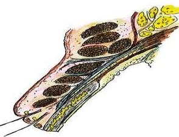
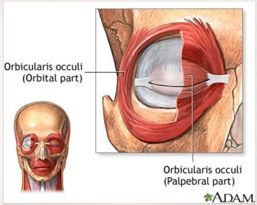

Part I · Muscles
Anatomy of the orbicularis oculi muscle
- 1) The orbital part — responsible for tight closure of the eyelids.
- 2) The palpebral part — responsible for gentle eyelid closure, subdivided into:
- Preseptal part: overlying the orbital septum.
- Pretarsal part: overlying the tarsus.
- The muscle of Riolan (pars ciliaris): spreads along the lid margin and keeps the eyelid apposition with the globe.
- 3) The lacrimal part — Horner’s muscle (pars lacrimalis): responsible for the lacrimal pump.
N.B. The orbicularis oculi is supplied by the facial nerve (7th nerve); its paralysis leads to lagophthalmos, epiphora and paralytic ectropion.

